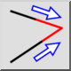
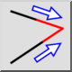
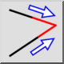
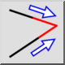

Recortar ambas
Barra de herramienta / icono:
 

Menú: Modificar > Recortar ambas
Acceso directo: T, M
Comandos: trim2 | extend2 | tm
Esta es una traducción automática.
Barra de herramienta / icono:
 

Menú: Modificar > Recortar ambas
Acceso directo: T, M
Comandos: trim2 | extend2 | tm
Recorta o extiende dos líneas, arcos o elipses hasta su punto de intersección común.